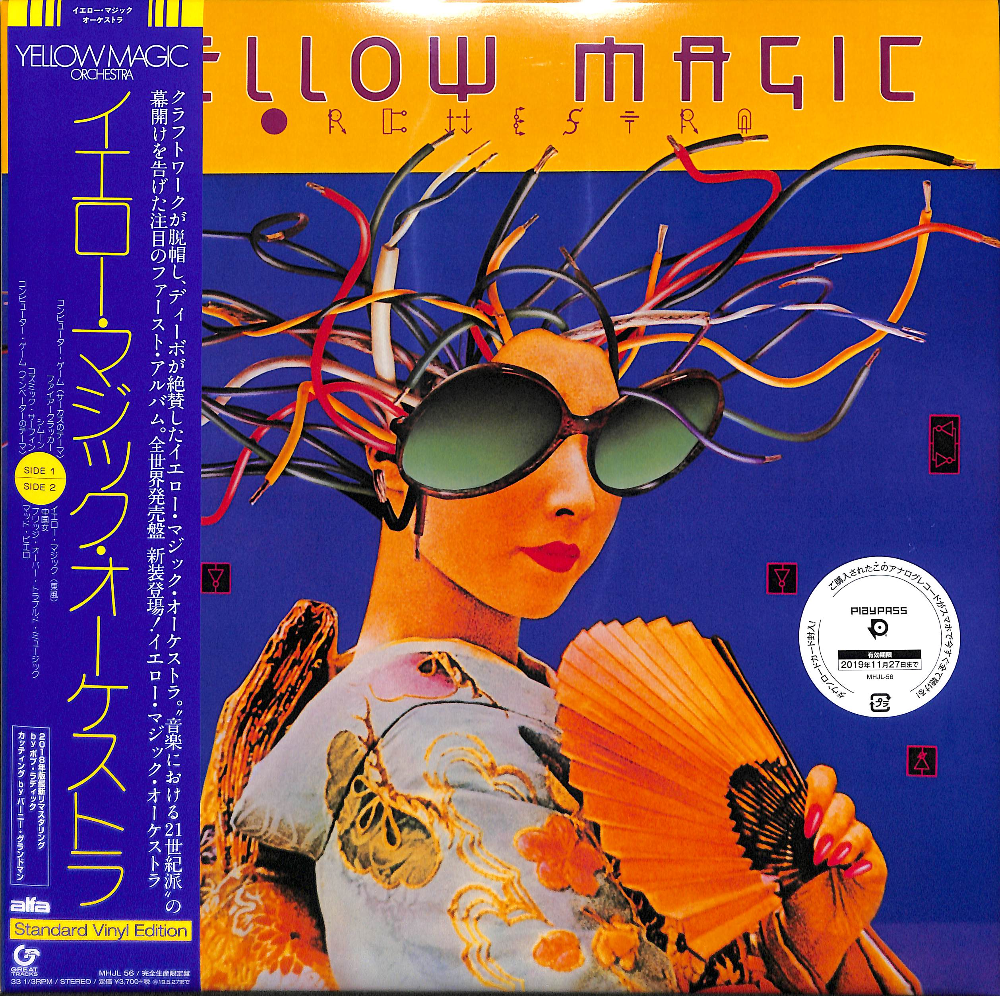

『クラフトワークが脱帽し、ディーボが絶賛したイエロー・マジック・オーケストラ。全世界発売盤新装登場! 』YMOは78年12月に行われた「フュージョン・フェスティバル」に出演し、 それを観たA&Mプロデューサー、トミー・リピューマは海外発売を即決、 翌年LAにてこのアルバムのリミックスが行われた。 前掲のアルバム・ラスト「アクロバット」がカットされ、「東風」には吉田美奈子の ヴォーカル・ダビング、その他エコー処理等米国市場向け(?)とされる加工が 施されている。ジャケットは、頭からコードが生えたサングラス芸者に変更。 アメリカではシングル「ファイヤークラッカー」と同時に79年5月リリース、 イギリスでは6月のリリース(シングルは「東風」)。復刻盤は坂本龍一、高橋幸宏の最新「YMO振り返りインタビュー」、そして細野晴臣東芝盤(1999年)インタビュー復刻掲載。1999年細野リマスタリング音源使用。

1.コンピューター・ゲーム －サーカスのテーマ－
2.ファイアークラッカー
3.シムーン
4.コズミック・サーフィン
5.コンピューター・ゲーム －インベーダーのテーマ－
6.イエロー・マジック（東風）
7.中国女
8.ブリッジ・オーバー・トラブルド・ミュージック
9.マッド・ピエロ